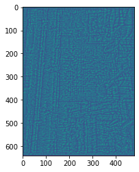

The problem I attempted to solve using CNNs is monocular depth estimation, which is where a computer program can estimate how far away objects are, given just one image. Humans naturally get two images (via their eyes) that makes this task easier, but a lot of easily-accessible consumer electronics only have one camera, which could give more readily-available consumer apps access to depth information. If it fully worked, it would be great as easy ways of determining distance and the surface shape of a particular object, for example, which has a number of potential applications.
So the task of depth inference is pretty easy to understand.
Basically, you take an image, and for every pixel in the image and given the context of the entire image, generate a depth value for each pixel in the output image.
Turns out from all my research on this topic online, there are many ways to do this specific task, and it doesn't even have to be supervised either—there are plenty of unsupervised and semi-supervised methods out there, but I went and looked for supervised methods since I wanted to try my hand at some more machine learning tasks. There were existing methods out there that used a network to find an image mask first before running that through a network to get depths, but I tried to use a more direct, single-network approach since finding a dataset & training a network for just one task is a lot simpler.
So, I found an architecture that's being used for a similar task, semantic segmentation, which also has an image-to-image neural network. (Source: Learning Deconvolution Network for Semantic Segmentation)
I coded a very similar implementation to the diagram from scratch in PyTorch, with three convolution, max pool, max unpool, and convolutional transpose layers, and two activated fully connected linear layers in the middle.
For my optimizer, I used Stochastic Gradient Descent, and used Mean Squared Error as my loss function when checking the veracity of the network's generated depth maps.
To train the model, however, I would also need a dataset.
Luckily, there's plenty of datasets online for the purposes of depth estimation! I decided to use NYU's depth dataset, as it's not only a pretty well-known and well-used benchmark, but also happens to have over 2 gigabytes of data for hopefully more clear training.
I made the model and scripts themselves in a Jupyter notebook, using h5py to read NYU's dataset in .mat format and pytorch to build the model, as the course staff seemed to have the most familiarity in it and I had learned to use it in an NLP class previously. For the visualizations at the end, I used matplotlib to show how everything worked out, as I was pretty familiar with it as well and it easily supported 3D graphs.
(You can find the notebook file here)
So, everything was going well at first, pytorch has really convenient functions for unpooling and deconvolution.
That is, until they weren't convenient.
Turns out that after several hours of banging my head, I figured that such a wild number could only be generated by faulty C code in the pytorch library, and fixed the problem by installing the latest version of pytorch instead of the one I used for my NLP class this quarter.
After that, I tried several different implementations of the network, but found that they either trained too slowly or kept outputting NaN for their loss function. Since I figured the last part was due to gradient explosion/vanishing, to fix this, I normalized the input images to have values between 0 and 1 rather than 0 and 255, reduced the learning rate, and simplified the model.
Finally, after reducing the number of pooling/unpooling/conv/deconv layers to 2 and increasing the dimensionality of the fully connected linear layers, I trained the model for a few hours and this is what I got:

You can compare this with the actual depth map and the original image:
As you can see, it's pretty far off from reality. At the same time, though, it shows at least a bit of potential—there are lines in the network-generated depth map that correspond with the ceiling beams in the original image as well as the foreground furniture, though they're pretty faint. Perhaps if the model was trained more and with a deeper network, it might've done better.
It's even worse when looking using a 3D view. The original depth map looks kind of like this:
Meanwhile, my depth map looked more like this:
(This is from one of my worse runs, the better ones were similarly noisy but had more red and blue to them.)
In addition to training longer and with a deeper network, there's a good shot that I was using a wrong or at least suboptimal loss function. A loss function that encouraged continuous but less noisy values might be better in this circumstance, for example. There's also a lot I could've done with regards to hyperparameter training, as there was no dropout, no change in the gradient function, and not much testing with the learning rate (though the loss appeared to peter out pretty quickly).
Ultimately, it wasn't the most successful project, but I certainly learned a lot about both PyTorch implementation and the CNN learning process!